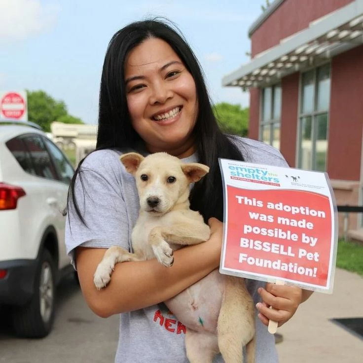
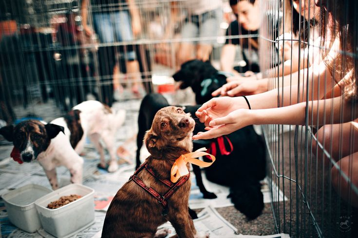
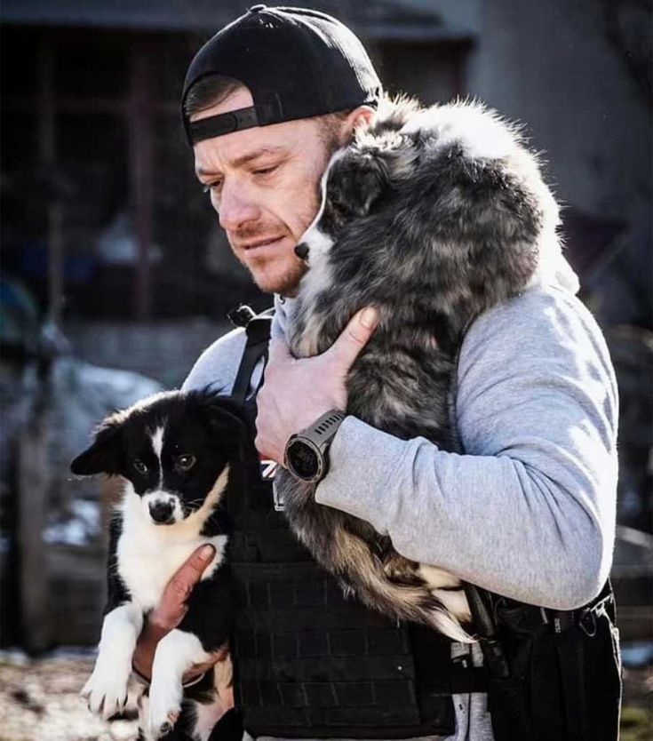
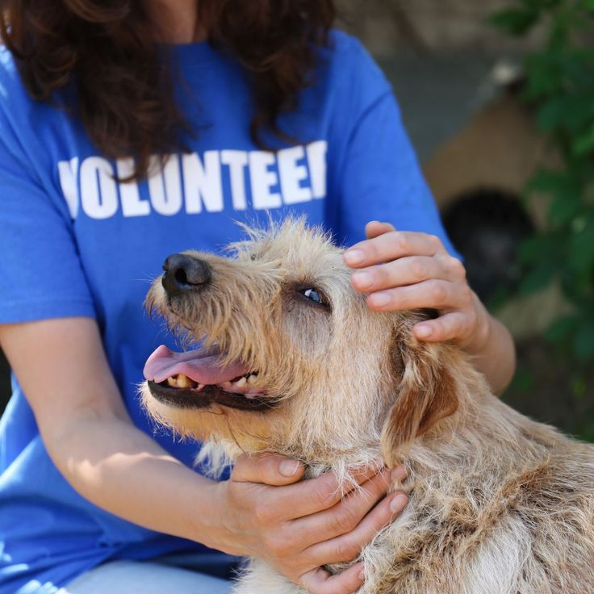
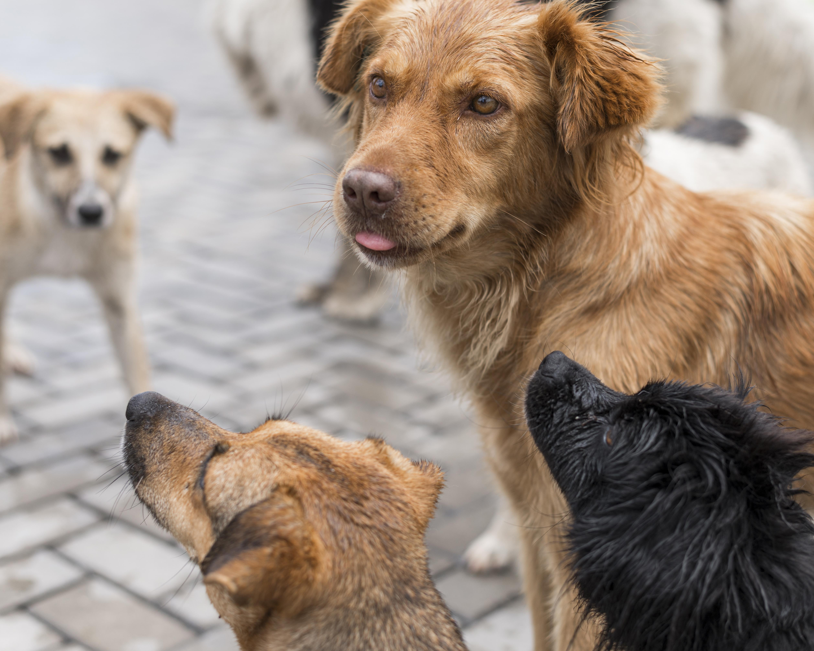
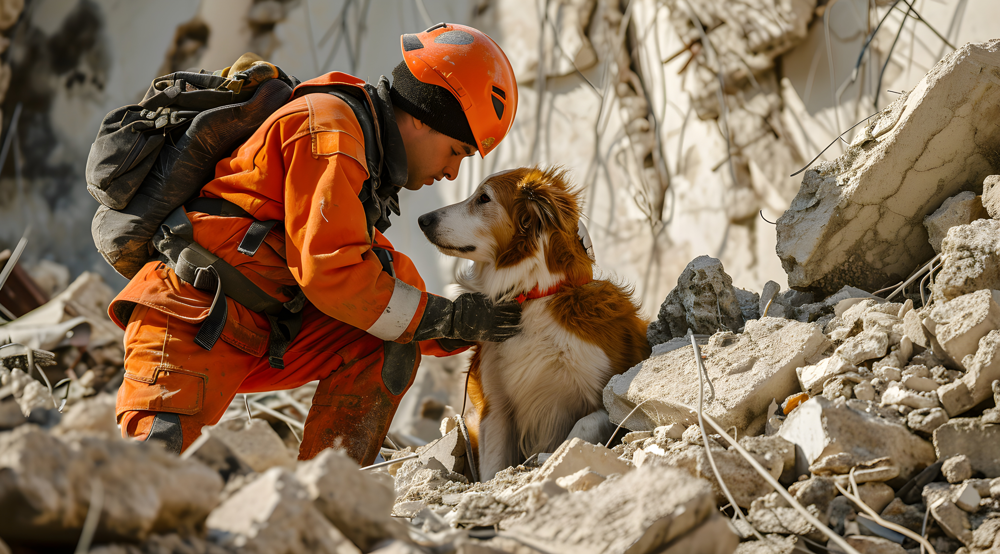
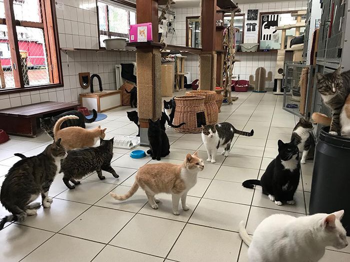

Dando amor, una pata a la vez.
Rescatamos, rehabilitamos y encontramos hogares amorosos para animales en situación de abandono.


En Fundación Patitas Felices nos dedicamos al rescate, cuidado y reubicación de animales en situación de calle o abandono. Trabajamos día a día para brindarles atención médica, alimento, y sobre todo, el amor que merecen mientras encuentran su hogar definitivo.
Encuentra tu compañero perfecto y dale un hogar lleno de amor.
Tu apoyo nos ayuda a seguir salvando vidas y mejorando su calidad.
Únete a nuestro equipo y ayúdanos a hacer la diferencia.
¿Tienes preguntas? Estamos aquí para ayudarte.
Ser la fundación líder en rescate y adopción responsable de animales, creando un mundo donde cada animal tenga un hogar lleno de amor y cuidado, y donde la comunidad valore y proteja a todos los seres vivos.
Rescatar, rehabilitar y reubicar animales en situación de abandono, promoviendo la adopción responsable y educando a la comunidad sobre el bienestar animal. Trabajamos incansablemente para dar una segunda oportunidad a quienes más lo necesitan.







"Mi gato Max encontró su hogar gracias a esta maravillosa fundación. ¡Recomendado 100%!"
- Ana Martínez, adoptante"Adoptar a Luna fue la mejor decisión de mi vida. Gracias Fundación Huellitas por todo el amor y cuidado que le dieron."
- María González, adoptante"Ser voluntario aquí me ha enseñado el verdadero significado de la compasión. Cada animal tiene una historia increíble."
- Carlos Ramírez, voluntario